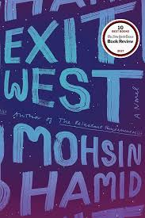

Two star reads. Books I just didn't like. Finishing felt like a chore. Granted, a lot of these are well known classics. When I read them, I felt they had been severely over-hyped or had deep issues that I didn't think should have been overlooked when declared a "classic".
